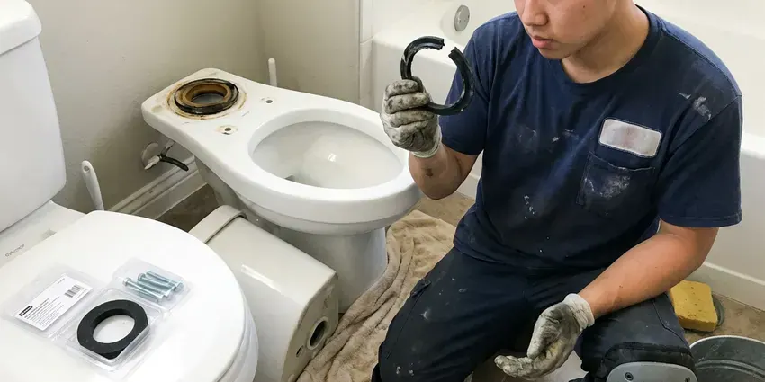

Sink Drain Replacement in Deming, NM
For reliable sink drain replacement in Deming, NM, look no further than GVK Plumbing. We make sure your plumbing is up to code and flowing freely.
- Upfront Pricing Every Time
- Fast, Reliable Service
- Skilled Plumbers
- Finish-Matched Drain Assemblies

Replace That Leaky, Corroded Sink Drain Today in Deming, NM.
We quote the full drain replacement upfront so there are no surprises later.
Sink Drain Replacement for Bathroom Vanities in Deming, NM
GVK Plumbing offers comprehensive sink drain replacement services across New Mexico. We understand the common issues homes face, from corrosion and mineral buildup to physical damage from daily use. Our plumbers are ready to install new drains that meet local codes and ensure lasting performance for your kitchen, bathroom, or utility sink.
Our expertise includes:
- Provide proper sealing and leak-free connections for new sink drains.
- Upgrade old or worn drain assemblies
- Replace pop-up drain bodies, flanges and pivot rod assemblies

Additional Bathroom Plumbing Services in Deming, NM
From toilets to showers, our bathroom plumbing team in Deming, NM handles repairs, installs, and upgrades with tidy, code-compliant work.




Professional toilet bowl replacement, Deming


Customers
Why Choose GVK Plumbing for Sink Drain Replacement in Deming, NM?
A failing drain leaks every time the sink is used, slowly ruining the vanity floor. Replacing the whole assembly at once stops the leak and prevents the next weak part from giving out.
- Local Expertise, GVK Plumbing understands the plumbing challenges in Deming, from mineral buildup to settling that can affect drain lines.
- Code Compliant, All our sink drain replacement work adheres strictly to local Deming and New Mexico plumbing codes, providing safety and proper function.
- Tested Seals, Every drain is filled and run before we leave.
Citywide Coverage
Our plumbers work throughout Deming and nearby communities every week. We carry drain assemblies for most standard bathroom sinks so the job is done on the first visit.
Experienced Team
Our plumbers understand how drain style affects function, including overflow versus non-overflow, push-button versus lift-rod, and grid drains. We pick the right one for your sink.
Safety-First Approach
We follow all local Deming and state plumbing codes during every sink drain replacement. This commitment to compliance protects your home and keeps your plumbing system operating safely and efficiently.
Trusted Certified Deming Plumbing Services Professionals
At GVK Plumbing, we take pride in providing certified plumbing services throughout Deming, NM. Backed by recognized industry credentials, our experienced plumbers combine technical skill with genuine customer care. Whether it is repair, installation, or maintenance, we follow strict safety and quality standards to deliver long-lasting results you can trust.
Call Us Now PHCC Plumbing Contractor Recognition
PHCC Plumbing Contractor Recognition Better Business Bureau (BBB) Accreditation
Better Business Bureau (BBB) Accreditation Angi Certified Pro
Angi Certified Pro ISO 9001 Quality Management Certification
ISO 9001 Quality Management CertificationTrusted Sink Drain Replacement Services in Deming, NM
Leaking Drain Assembly Repair & Replacement in Deming
A leaking sink drain assembly, whether from a loose connection, a cracked pipe, or failed seals, can cause serious damage to cabinets and flooring. Our plumbers are adept at diagnosing the exact source of the leak and determining if a repair is sufficient or if a full replacement of the drain components is necessary. We make sure all connections are properly tightened and sealed with plumber's putty or silicone to prevent future leaks under your Deming sink.

Code-Compliant Drain Upgrades in Deming
Older homes in Deming may have sink drain systems that no longer meet current plumbing codes or are simply outdated. When we replace your sink drain, we make sure that all new components, including the P-trap, tailpiece, and drain assembly, comply with the latest New Mexico plumbing regulations. This not only prevents potential fines but also protects the safety and efficiency of your home's plumbing system, improving drainage and preventing gas leaks.
Commercial Lavatory Drain Replacement in Deming
Commercial restrooms use offset grid drains and heavy-duty traps that see constant use. We replace these with ADA-compliant offset tailpieces and can add trap insulation kits where required. Work is scheduled to keep restrooms in service. Multi-sink restrooms can be completed in one visit.
Push-Button and Click-Clack Drain Installation in Deming, NM
Many homeowners switch to push-button drains to get rid of the lift rod entirely. These drains open and close with a press on the stopper. We confirm your sink has an overflow or choose a non-overflow version, then seal and test it. They are easy to clean and work well with modern faucets.
Bathroom Sink Drain Replacement in Deming, NM
Bathroom sink drains can suffer from hair, soap scum, and mineral deposits, leading to slow drainage or total blockages. GVK Plumbing offers expert bathroom sink drain replacement, including pop-up assemblies, P-traps, and wall drains. We handle various fixture styles, from pedestal sinks to vanity sinks, ensuring a clean, leak-free installation. We also check for proper venting and inspect connecting pipes to support long-term performance and prevent foul odors from entering your Deming home.
Emergency Sink Drain Services in Deming
A sudden, severe sink drain leak or complete blockage can be an emergency, causing water damage or rendering a sink unusable. GVK Plumbing offers emergency sink drain replacement and repair services to address critical issues promptly. Our team is equipped to respond quickly to your call in Deming, diagnosing the problem and performing necessary replacements to stop leaks or restore drainage, limiting disruption and potential damage to your home.
Choosing Drain Material & Brands in Deming, NM
When replacing a sink drain, homeowners have choices in materials like PVC, ABS, and occasionally brass or chrome-plated steel. PVC and ABS are popular for their durability and corrosion resistance, while brass offers a more traditional look. GVK Plumbing works with trusted brands like Moen, Delta, Kohler, and Plumb Pak for drain assemblies and components. We'll help you select the best material and brand for your specific sink type and budget in Deming, NM.

Leaking P-Trap Repair & Replacement in Deming
The P-trap is a critical component of any sink drain, preventing sewer gases from entering your home and trapping debris. Leaks in the P-trap are common due to cracks, loose connections, or corrosion. GVK Plumbing offers precise P-trap repair or full replacement services, using high-quality PVC, ABS, or chrome-plated brass traps. We provide proper sealing and alignment, eliminating leaks and maintaining the sanitary function of your sink drain system throughout Deming.
Trusted Sink Drain Replacement Near Me in Deming, NM
When you need a reliable plumber for sink drain replacement, GVK Plumbing is just a call away. We're dedicated to providing the highest quality plumbing services to our neighbors in Deming and the surrounding communities, making us the top choice for 'sink drain replacement near me'.
When you search for 'sink drain replacement near me' in Deming, NM, GVK Plumbing is your reliable local choice. We are deeply familiar with the plumbing across the area, from older homes with unusual setups to modern constructions.
GVK Plumbing at a Glance
- Licensed and insured plumbers serving Deming, NM
- 24/7 emergency service with same-day scheduling
- Clear written estimates, no hidden fees
- 4.8-star rated by 320+ New Mexico customers
Deming Map
Deming Information
- Population
- 14,603
- Area codes
- Local
- Service area
- Deming and communities within 40 miles
- Nearby
- Las Cruces, Sunland Park, Chaparral, Alamogordo
Water softeners and filtration systems are popular around Deming because they extend the life of fixtures and cut down on spotting. Aging metal drain stubs are also common in older homes, so replacing a worn sink drain in Deming, NM prevents slow leaks that quietly rot vanity cabinets and subfloors.
Expert Services
Trust our professionals for reliable GVK Plumbing solutions in Deming, NM.
Our Specialized Plumbing Services in Deming, NM
At GVK Plumbing, we provide a complete range of plumbing services across Deming, NM. From leak detection to full system installations, our team ensures fast, precise, and affordable service for both residential and commercial properties. Explore our core services below:


How Our Sink Drain Replacement Service Works in Deming, NM
Our sink drain replacement process at GVK Plumbing is designed for efficiency and minimal disruption.
Request a Quote
Call (505) 581-4975 and tell us about the leak or drain issue. We set an appointment and give you a price range over the phone.
Remove Old Drain
We disconnect the trap, free the drain body and clean the basin opening. Any damaged wall stub is inspected and fixed if needed.
Install and Verify
We install the new drain, trap and arm, then fill and empty the sink several times. We confirm a tight seal and easy stopper action.
Frequently Asked Questions About Sink Drain Replacement in Deming
Replacing a bathroom pop-up drain and P-trap usually costs $150 to $350 including standard parts. Wall stub repairs or designer finish drains can bring it to $300 to $600.
Key signs include persistent leaks under the sink, visible corrosion or rust on the drain pipes, frequent and recurring clogs despite snaking, slow drainage that doesn't improve with cleaning, or a broken drain stopper assembly. A strong sewer gas smell could also indicate a cracked or improperly vented drain.
To prevent future issues, avoid pouring grease down kitchen drains, use drain screens to catch hair and food particles, and flush bathroom drains with hot water regularly. If your home has hard water, consider occasional drain cleaning or water softening solutions to reduce mineral buildup that can lead to clogs and corrosion.
Most standard sink drain replacements, such as a P-trap or pop-up assembly, can be finished by a professional plumber within 1 to 3 hours. More complex jobs involving extensive pipe replacement or difficult access might take longer. Our plumbers work efficiently to limit disruption to your home.
Water softeners and filtration systems are popular around Deming because they extend the life of fixtures and cut down on spotting. Yes, hard water can seriously impact sink drains, because the high mineral content leads to scale buildup inside pipes, restricting flow, encouraging clogs, and speeding up corrosion, especially in older metal drains. Regular maintenance or water treatment can reduce these effects.
Generally, simple like-for-like sink drain component replacements, such as a P-trap or tailpiece, do not require a permit in Deming. However, if the work involves altering the main drain lines, relocating the sink, or making significant changes to the plumbing system, a permit may be necessary. Our plumbers are familiar with local codes and will advise you if a permit is required.
Absolutely. GVK Plumbing provides complete sink drain replacement services for both kitchen and bathroom sinks, as well as utility sinks. Our experienced technicians are equipped to handle the drain configurations of all types of residential sinks in Deming.
Common signs include persistent leaks under the sink, visible corrosion or rust on drain components, frequent clogs that return quickly after clearing, slow drainage, or a persistent foul odor coming from the drain that isn't resolved by cleaning. If you notice any of these, it is wise to have your drain inspected.
What People Are Saying About Our Plumbing Experts?

Mark T.
When our office needed drain cleaning, GVK Plumbing provided quick, reliable service. The plumber arrived on time and made sure every drain flowed perfectly before leaving. Very satisfied.
Drain Cleaning · Los Lunas, NM
Sofia M.
Two new toilets installed in one visit, no mess left behind, and the tech even adjusted a faucet he noticed was dripping. Fair pricing and really friendly.
Toilet Installation · Artesia, NM
James P.
Our commercial plumbing system had a leak under the sink, and GVK Plumbing handled it professionally. The plumbers arrived quickly and restored everything without disruption to our customers.
Commercial Plumbing · Deming, NM
Emily R.
I called GVK Plumbing for plumbing repair, and the technician was fast, polite, and thorough. They explained the problem clearly and fixed it the same day. I will definitely hire them again. Highly recommended!
Plumbing Repair · Artesia, NM
Patricia H.
We had a slab leak that two other companies could not find. GVK Plumbing located it in under an hour, explained our options, and the price matched the quote to the dollar.
Slab Leak Repair · Deming, NM
Daniel K.
A pipe burst at 11 pm and they actually answered. The plumber showed up within the hour, shut everything down, and had us back to normal the next morning. Could not ask for more.
Emergency Plumbing · Los Lunas, NM